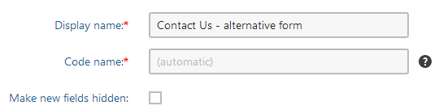
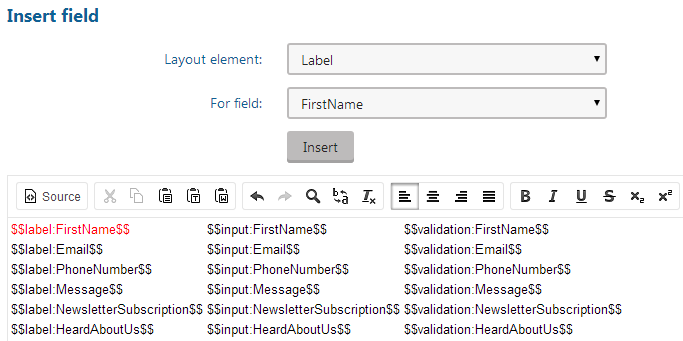
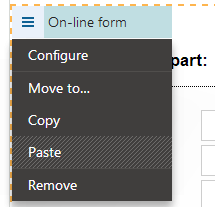
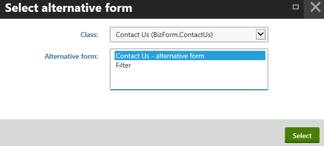
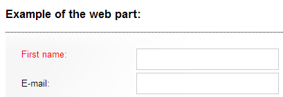

Creating alternative forms for on-line forms
The alternative forms allow you to create alternative representations of existing forms, which you can then use in different situations.
You can also create all types of alternative forms in a similar way in the appropriate sections of the UI:
Page type alternative forms in the Page types application.
Custom table alternative forms in the Custom tables application.
This example shows you how to create an alternative form of the existing Contact us form on the sample Corporate Site.
Adding the alternative form
In the Forms application, Edit (
 ) the Contact Us form.
) the Contact Us form.Switch to the Alternative forms tab.
Click the Create new form button.
Type in the Display name.
Check the Make new fields hidden check-box (this ensures that any new fields added to the main form are not displayed in the alternative form by default).

Creating an alternative form for the Contact Us formClick Save.
Configuring the form fields and layout
After you create an alternative form for the Contact us form, you can adjust its fields (using the field editor) and layout.
Switch to the Fields tab. All fields present in the original form are also available here and you can modify their configuration.
Modify the fields according to your needs. For example, disable the LastName field:
Select the LastName field in the list on the left.
Uncheck Display attribute in the editing form.
Click Save.
Switch to the Layout tab.
Check the Use custom form layout radio button.
The system displays the layout editor.
Notice that the LastName field that we disabled in the previous step is not offered in the drop-down list.
Select HTML or ASCX as the layout type.
Click the Generate default layout button.
The system generates a default table layout in the editing area below.
Adjust the default layout using the text editor or ASCX markup.
For example, highlight the $$label:FirstName$$ text in the first row and change its color to red using the text editor.

Click Save.
Displaying the alternative form on the website
Open the Pages application.
Navigate to Examples -> Web parts -> Forms -> On-line form. The original version of the Contact Us form is displayed on the page.
Switch to the page's Design tab.
Open the web part menu (
 ) next to the the On-line form web part's properties.
) next to the the On-line form web part's properties.Click on Configure.

Configuring On-line form web partClick the Select button next to the Alternative form name property. The Select alternative form dialog opens.
Choose the Contact Us (BizForm.ContactUs) class and select the previously created alternative form.

Choosing an alternative formClick Select and Save & Close to close the dialogs.
Now when you switch to Preview mode, you should see the modified version of the form.

An alternative representation of the Contact Us form